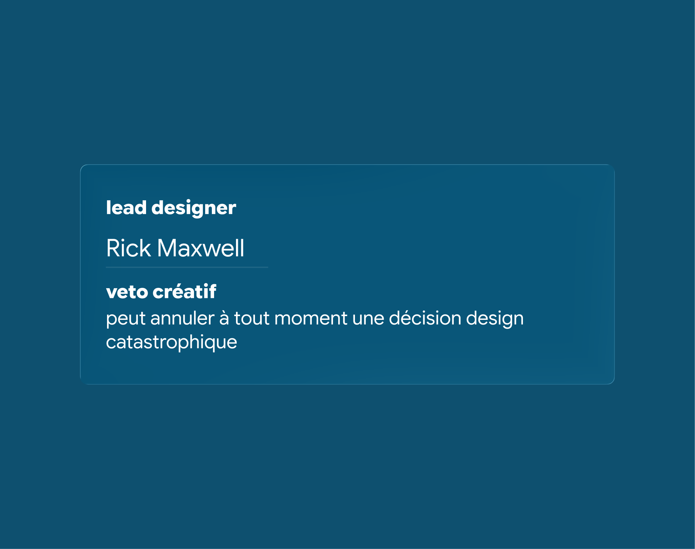

[Project info]
With a simple task, create a UI card for a member profile, I wanted to explore how to make a simple component feel fun and engaging. I focused on creating a design that was clear and easy to understand, while also incorporating playful elements that would make the user experience more enjoyable.
Role
UI Design, solo exercise
Type
UI component
Platform
Browsers
Focus
Clarity, fun & comprehensibility
